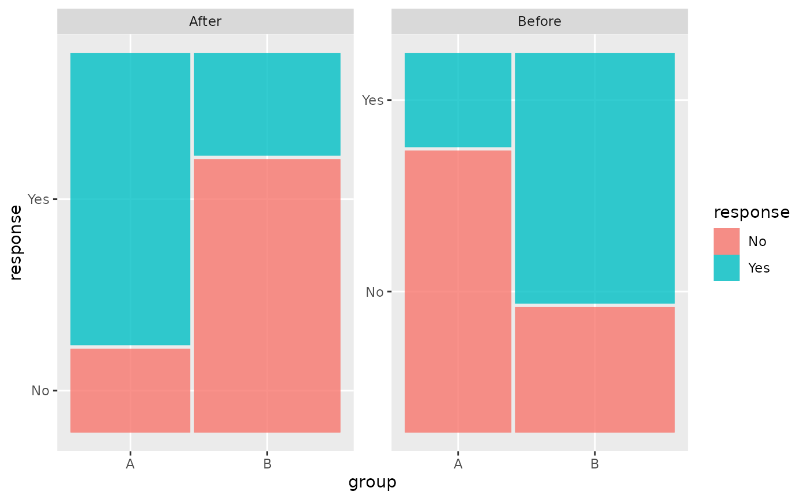

facet_mosaic_grid() lays panels out like ggplot2::facet_grid(), but gives
every panel its own x and y position scales. Mosaic category breaks depend on
the proportions calculated inside a panel, so sharing a position scale can
place one panel's ticks and labels on another panel's mosaic.
Usage
facet_mosaic_grid(
rows = NULL,
cols = NULL,
space = "fixed",
shrink = TRUE,
labeller = "label_value",
as.table = TRUE,
switch = NULL,
drop = TRUE,
margins = FALSE,
axes = "all",
axis.labels = "all"
)Arguments
- rows, cols
A set of variables or expressions quoted by
vars()and defining faceting groups on the rows or columns dimension. The variables can be named (the names are passed tolabeller).For compatibility with the classic interface,
rowscan also be a formula with the rows (of the tabular display) on the LHS and the columns (of the tabular display) on the RHS; the dot in the formula is used to indicate there should be no faceting on this dimension (either row or column).- space
If
"fixed", the default, all panels have the same size. If"free_y"their height will be proportional to the length of the y scale; if"free_x"their width will be proportional to the length of the x scale; or if"free"both height and width will vary. This setting has no effect unless the appropriate scales also vary.- shrink
If
TRUE, will shrink scales to fit output of statistics, not raw data. IfFALSE, will be range of raw data before statistical summary.- labeller
A function that takes one data frame of labels and returns a list or data frame of character vectors. Each input column corresponds to one factor. Thus there will be more than one with
vars(cyl, am). Each output column gets displayed as one separate line in the strip label. This function should inherit from the "labeller" S3 class for compatibility withlabeller(). You can use different labeling functions for different kind of labels, for example uselabel_parsed()for formatting facet labels.label_value()is used by default, check it for more details and pointers to other options.- as.table
If
TRUE, the default, the facets are laid out like a table with highest values at the bottom-right. IfFALSE, the facets are laid out like a plot with the highest value at the top-right.- switch
By default, the labels are displayed on the top and right of the plot. If
"x", the top labels will be displayed to the bottom. If"y", the right-hand side labels will be displayed to the left. Can also be set to"both".- drop
If
TRUE, the default, all factor levels not used in the data will automatically be dropped. IfFALSE, all factor levels will be shown, regardless of whether or not they appear in the data.- margins
Either a logical value or a character vector. Margins are additional facets which contain all the data for each of the possible values of the faceting variables. If
FALSE, no additional facets are included (the default). IfTRUE, margins are included for all faceting variables. If specified as a character vector, it is the names of variables for which margins are to be created.- axes
Determines which axes will be drawn. When
"margins"(default), axes will be drawn at the exterior margins."all_x"and"all_y"will draw the respective axes at the interior panels too, whereas"all"will draw all axes at all panels.- axis.labels
Determines whether to draw labels for interior axes when the
axesargument is not"margins". When"all"(default), all interior axes get labels. When"margins", only the exterior axes get labels and the interior axes get none. When"all_x"or"all_y", only draws the labels at the interior axes in the x- or y-direction respectively.
Details
Panel widths and heights remain fixed. By default, axes and their labels are
drawn for every panel so that each panel's category positions are visible.
The panel-specific label positions are retained with theme_mosaic(); that
theme intentionally hides the tick marks themselves.
Examples
facet_data <- expand.grid(
period = factor(c("Before", "After")),
group = factor(c("A", "B")),
response = factor(c("No", "Yes"))
)
facet_data$n <- c(30, 10, 20, 40, 10, 35, 40, 15)
ggplot(facet_data,
aes(weight = n, x = product(response, group), fill = response)) +
geom_mosaic() +
facet_mosaic_grid(cols = vars(period))
